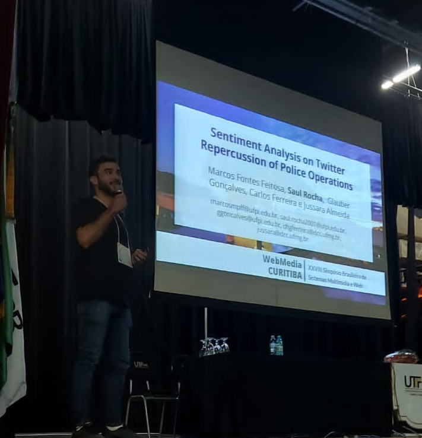

Olá, Meu Nome é
Saul Rocha
Cientista de Dados, Desenvolvedor Front-End & Pesquisador
Saiba mais

Sobre mim
Quem sou eu
Meu nome é Saul Rocha, sou Cientista de Dados, Desenvolvedor Front-End e Pesquisador.
Iniciei no mundo da programação em 2018. Atualmente estou trabalhando com Ciência
de Dados em um projeto de pesquisa no laboratório de Pesquisas Avançadas em Análise de Dados
(PAAD) da Universidade Federal do Piauí. Além disso,
também faço parte da equipe de voluntários do Departamento de Tecnologia da ONG
Amigos da Comunidade.
Meus serviços
O que eu posso fazer
Projetos e Experiências
Comparação Entre o Britador de Martelos e o Moinho de
Bolas no Produto Final da Gipsita
Projeto de Pesquisa
IFPI Campus Paulistana
Projeto de pesquisa para saber sobre a eficiência dos dois equipamentos
no tratamento e no produto final da gipsita
Informática Básica Para Todos - Entrando no Mundo
Digital
Projeto de Extensão
UFPI - Picos Campus Senador Helvídio Nunes de Barros
Projeto de extensão ensinando informática básica através de vídeo aulas.
Treinamento para Olimpíada Brasileira de Informática (OBI 2021)
Projeto de Extensão
UFPI - Picos Campus Senador Helvídio Nunes de Barros
Ministrante de aulas de algoritmos para treinamento e participação de jovens estudantes do ensino fundamental, médio, técnico e recém ingressantes no ensino superior na área de informática na etapa de programação da OBI 2021.
Predição de Crimes em Regiões Urbanas a partir de Múltiplas Fontes de Dados Geradas por Usuários na
Web
Projeto de Pesquisa
UFPI - Picos Campus Senador Helvídio Nunes de Barros
Projeto de pesquisa que visa predizer crimes em localidades urbanas utilizando ferramentas de
machine learning e dados da Web.
Sistema de Controle de Pacientes ONG Amigos da Comunidade
Projeto de Estágio
UFPI - Picos Campus Senador Helvídio Nunes de Barros
Desenvolvimento Front-End do sistema de controle de pacientes da ONG Amigos da Comunidade